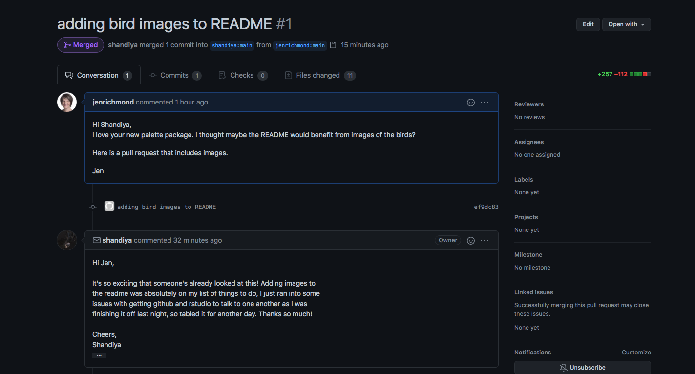

devtools::install_github("shandiya/feathers")my first pull request
There are so many lovely packages for colour palettes (see links at the bottom of this post for more).
This new one called feathers by Shandiya Balasubramanium is inspired by Australian birds and is delightful.
The vignette doesn’t have any pictures of the birds though, so I thought it might be a good opportunity to help Shandiya out and try my first pull request. I am documenting the process here, so I can refer back to it for next time.
Trying out the feathers package
I’ve installed the feathers package from github…
… and loaded the palette names
library(feathers)You can print each palette by using the get_pal() function and the print_pal() function. There is the palette for the Eastern Rosella
er <- get_pal("eastern_rosella")
print_pal(er)
Adding bird images for each palette
Eastern Rosella

Image credit: JJ Harrison. This file is licensed under the Creative Commons Attribution-Share Alike 3.0 Unported license. Image source: Wikimedia Commons.
{kind=link}

Plains wanderer

Image credit: Patrick_K59. This file is licensed under the CC BY 2.0, https://commons.wikimedia.org/w/index.php?curid=34831381. Image source: Wikimedia Commons.
{kind=link}
Rose crowned fruit dove

Image credit: Bjørn Christian Tørrissen, CC BY-SA 3.0, https://commons.wikimedia.org/w/index.php?curid=6874281

Bee eater

Image credit: JJ Harrison. This file is licensed under the Creative Commons Attribution-Share Alike 3.0 Unported license. Image source: Wikimedia Commons.
{kind=link}

Contributing to a package with a pull request
When making a pull request you are asking the person who wrote the package (or who owns the repo) to pull the changes you have made into the original repo.
Step 1: fork the repo
Forking is the process of creating a copy of a repo owned by someone else in your github account. There is a button on the top right corner of every github repo that allows you to Fork a copy.

Step 2: clone the repo
Once you have a copy of the repo in your github account, use the green button to clone the forked copy on to your machine.

You can copy the url and within RStudio use File-New project-From Version control. Or in the terminal use…
pwdto print your working directory and thencdto navigate to the folder where you want to clonegit clone "paste URL"to clone the repo into that location
pwd
cd Users/jenny/Desktop/git
git clone "paste URL here"
Step 3: make changes to your local copy
Once you clone the repo to your machine, you can make changes. I open the README.Rmd file added the images linked above. I knitted the README to check it that it looked OK and saved the file.
Step 4: push your changes to your forked copy
Once I had the README looking like I wanted, I pushed my changes to the forked copy in my repo using these commands in the terminal.
git add .
git commit -m "adding bird images to README"
git push
Step 5: make a pull request
Now for the hard bit, fingers crossed. I’m following the instructions here.
Refresh the browser on your forked repo and check that the README now includes your changes.
Navigate to the original repo (where you created the fork in the first place) and choose the Pull requests tab.

- Choose New pull request and the “compare across forks” option

- Choose your fork as the head repository to compare and see whether your changes can be merged automatically. Click Create pull request.

- Write a note to the repo owner as an issue.

- Wait and see if they like your changes :)

- Celebrate!
my favourite colour palettes
And many many more to be found in Emil’s list